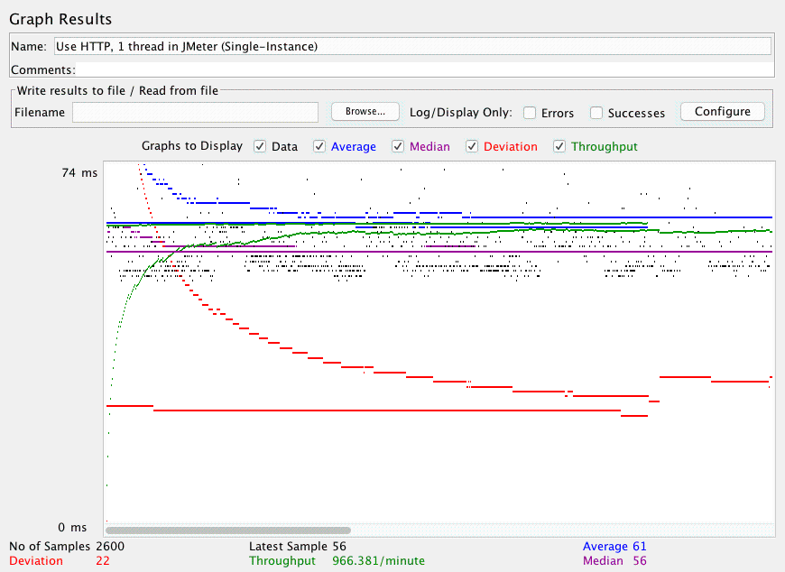
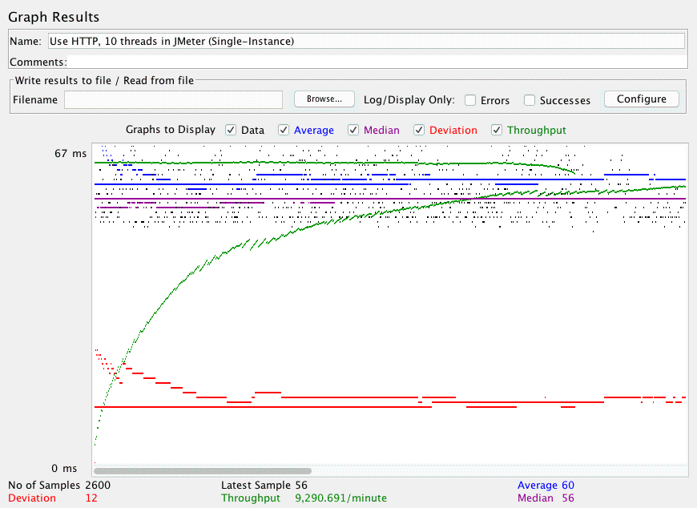
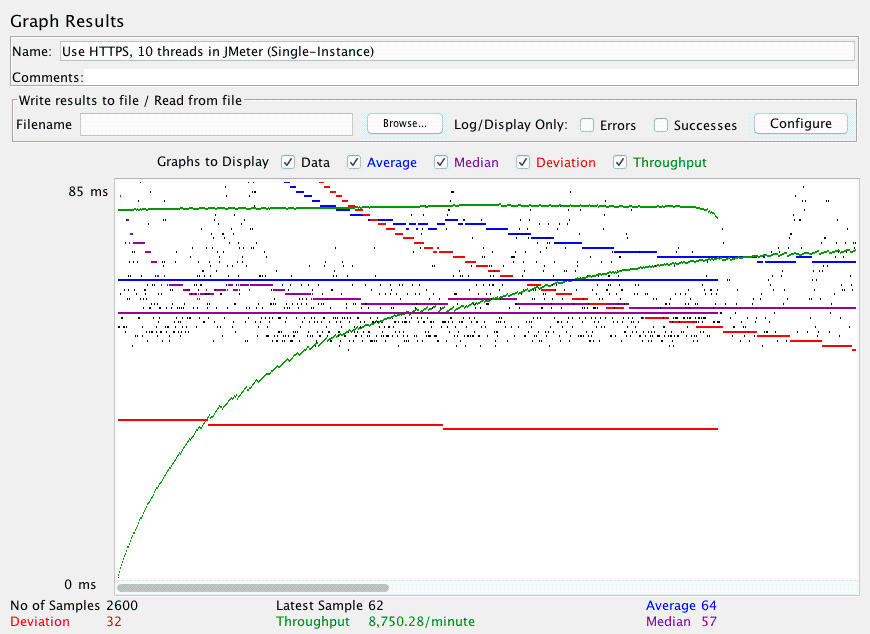
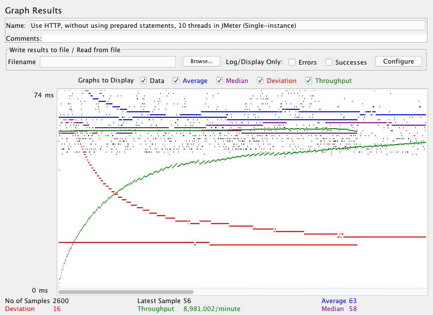
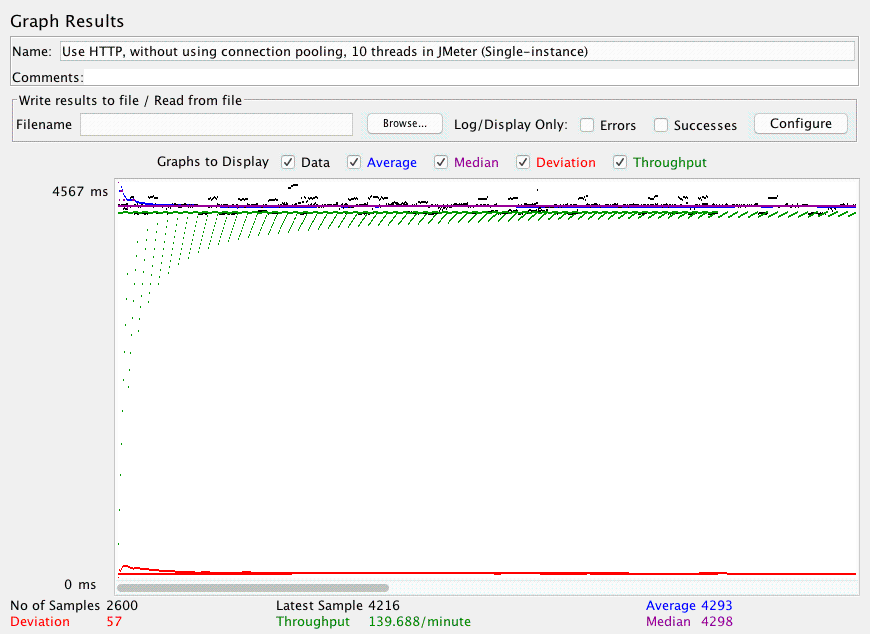
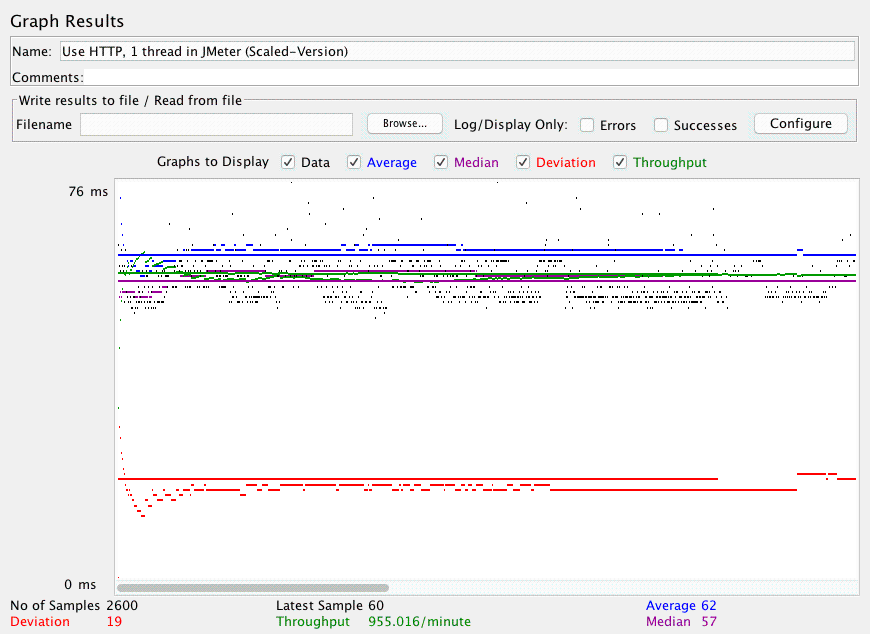
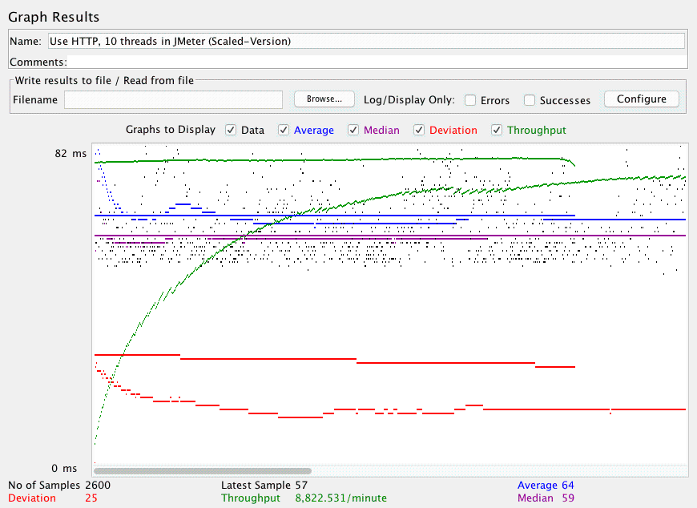
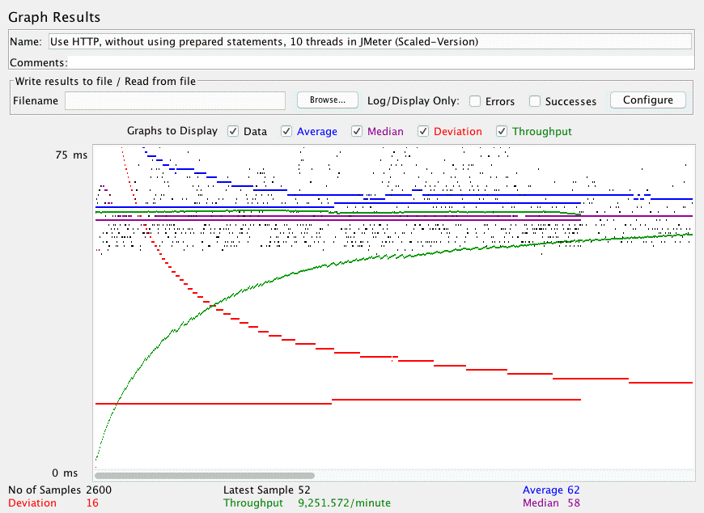

| Single-instance version cases |
Graph Results Screenshot |
Average Query Time(ms) |
Average Search Servlet Time(ms) |
Average JDBC Time(ms) |
Analysis |
| Case 1: HTTP/1 thread |
 |
61 |
2.49 |
2.45 |
A thread ran 2600 HTTP requests. The average query time of those requests was 61ms.
The average search servlet time was around 2.49ms and the average JDBC time was around 2.45ms. Both connection pooling
and prepared statements were enabled for this case. In this case, the average query time is 61ms which is normal
and the average search servlet time and average JDBC time are low because there is only one thread connecting to the instance |
| Case 2: HTTP/10 threads |
 |
60 |
4.28 |
4.26 |
Ten threads ran a total of 2600 HTTP requests (260 per thread). The average query time of those requests was 60ms.
The average search servlet time was around 4.28ms and the average JDBC time was around 4.26ms. Both connection pooling
and prepared statements were enabled for this case. Since there are 10 threads connecting to the instance, the average search
servlet time and average JDBC time is doubled because the sevlets are serving the requests from 10 different threads. |
| Case 3: HTTPS/10 threads |
 |
64 |
5.21 |
5.19 |
Ten threads ran a total of 2600 HTTPS requests (260 per thread). The average query time of those requests was 64ms.
The average search servlet time was around 5.21ms and the average JDBC time was around 5.19ms. Both connection pooling
and prepared statements were enabled for this case. This case is using HTTPS instead of HTTP so the average query time,
search sevlet time, and JDBC time are higher since it needs longer time to establish HTTPS connection. |
| Case 4: HTTP/10 threads/No prepared statements |
 |
63 |
5.98 |
5.95 |
Ten threads ran a total of 2600 HTTP requests (260 per thread). The average query time of those requests was 63ms.
The average search servlet time was around 5.98ms and the average JDBC time was around 5.95ms. Connection pooling
was enabled and prepared statements were disabled for this case. Since we are not using a prepared statement in this case,
the servlet has to recreate queries every time it runs so it takes extra time |
| Case 5: HTTP/10 threads/No connection pooling |
 |
4293 |
4002.32 |
4002.29 |
Ten threads ran a total of 2600 HTTP requests (260 per thread). The average query time of those requests was 4293ms.
The average search servlet time was around 4002.32ms and the average JDBC time was around 4002.29ms. Connection pooling
was disabled and prepared statements were enabled for this case. Without connection pooling, the average query time,
and the average JDBC time took a lot longer because each threads need to take time to establish the JDBC connection which
is significantly longer. |
| Scaled version cases |
Graph Results Screenshot |
Average Query Time(ms) |
Average Search Servlet Time(ms) |
Average JDBC Time(ms) |
Analysis |
| Case 1: HTTP/1 thread |
 |
62 |
2.75 |
2.71 |
A thread ran 2600 HTTP requests. The average query time of those requests was 62ms.
The average search servlet time was around 2.75ms and the average JDBC time was around 2.71ms. Both connection pooling
and prepared statements were enabled for this case. In these cases, we have a MySQL master and slave. Although the read throughput
should have been increased, we actually see similar times to single instances. This is because of the design architecture of Project 5.
With sticky sessions, the load balancer selects one physical server to serve all requests from a single session. Each physical server talks
to its own MySQL for reads. Because one physical server is assigned to handle all these requests, these times are expected to be similar to single instance. |
| Case 2: HTTP/10 threads |
 |
64 |
6.41 |
6.39 |
Ten threads ran a total of 2600 HTTP requests (260 per thread). The average query time of those requests was 64ms.
The average search servlet time was around 6.41ms and the average JDBC time was around 6.39ms. Both connection pooling
and prepared statements were enabled for this case. Again we find similar times to single instances, although they were a bit slower.
This is likely due to Apache2's load balancing. Each time a thread makes a request, Apache must route them back to the correct physical location
(since sticky sessions were enabled) costing a bit of overhead for the search servlet time when it returns results. |
| Case 3: HTTP/10 threads/No prepared statements |
 |
62 |
5.39 |
5.37 |
Ten threads ran a total of 2600 HTTP requests (260 per thread). The average query time of those requests was 62ms.
The average search servlet time was around 5.39ms and the average JDBC time was around 5.37ms. Connection pooling
was enabled and prepared statements were disabled for this case. This result was surprising: this was a bit faster than our previous case,
where prepared statements were enabled. However, further inquiry into our code from Project 4 reveals we did a lot of caching. With the prepared
statement implemenations, we did not do caching. This is like why this was faster. |
| Case 4: HTTP/10 threads/No connection pooling |
 |
4304 |
4002.72 |
4002.69 |
Ten threads ran a total of 2600 HTTP requests (260 per thread). The average query time of those requests was 4304ms.
The average search servlet time was around 4002.72ms and the average JDBC time was around 4002.69ms. Connection pooling
was disabled and prepared statements were enabled for this case. Again, similar to single instance, it is no surprise why this
is so slow. Not even backend scaling would have helped much, because each time a SINGLE thread makes a request, again,
even with or without sticky sessions enabled, a connection would have to be established, which makes an immense amount of time. |